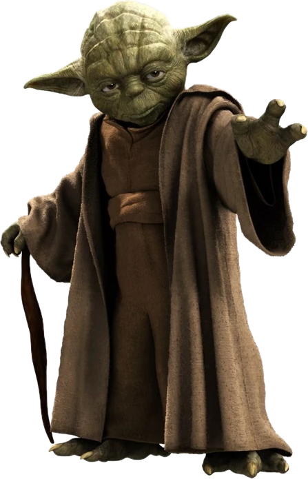
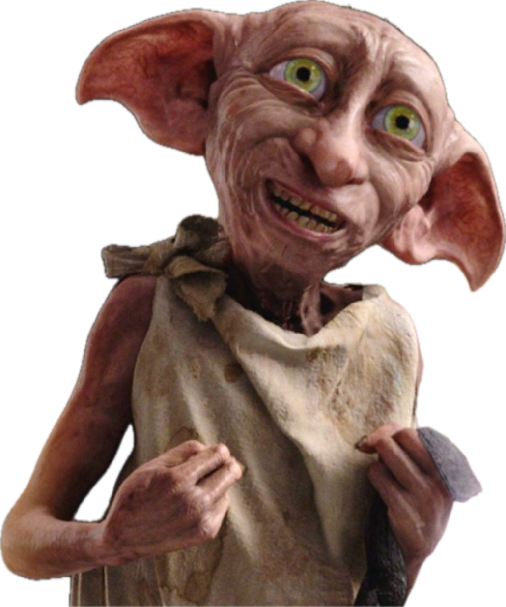
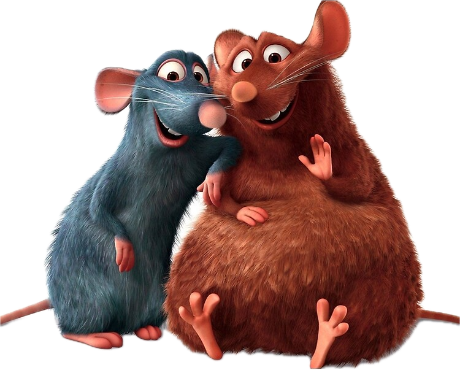

GOOD FILM, GOOD LIFE.
잘 만든 영화는 좋은 영화로 성장하고, 좋은 영화는 좋은 삶으로 나아가는 힘이 되어줍니다.
어떤 영화가 잘 만든 영화일까요? 좋은 영화가 되는 기준은 무엇일까요?
우리는 좋은 삶을 만들어주는 잘 만든, 좋은 영화에 대한 담론을 키우고 안목을 나눕니다.
MORE STORIES,
NOT JUST 5 STARS.
우리는 별 다섯 개로는 다 담을 수 없는 영화의 재미와 이야기를 발견합니다.
독창적인 안목과 에디토리얼을 통해 영화의 감상을 저널, 출판, 토크, 커뮤니티 등 새로운 문화적 경험으로 확장합니다.
우리는 영화에 숨겨진 셀 수 없이 많은 재미를 꺼내 나만의 은밀한 이야기로 만들어내는 콘텐츠 에디토리얼 스튜디오입니다.
YOU X BOX8
재미에도 안목이 필요하다
그저 그런 재미에 시간을 허비하기에는 우리 인생은 너무 짧습니다. 우리는 사용자와 더 좋은 영화 엔터테인먼트 콘텐츠의 재미를 연결하기 위해 일합니다. 우리는 광고가 아닌 믿을만한 리뷰를 찾다가 포기하고, 밤 11시에 OTT 메인 화면을 전전하다가 지쳐 잠드는 날들의 솔루션을 제공합니다. 깊고, 넓고, 높은 안목이 우리의 원천 기술입니다.
뉴스룸의 민첩한 커뮤니케이터
우리는 ‘지금, 여기’에 필요한 이슈를 포착하는 민첩함을 중시합니다. 이슈에 따라 일의 우선순위가 급박하게 변경되는 뉴스룸의 강도 높은 스트레스를 감당해내기도 합니다. 일에 필요한 모든 정보와 과정을 투명하게 공유하고, 정중하게 커뮤니케이션합니다.
논리적인 말하기와 글쓰기
우리는 하나의 콘텐츠를 완성하기 위해 수많은 사람과 만나고, 협업하고 협상합니다. 우리는 문화와 사람을 만나게 하고, 글과 이미지, 오디오와 비디오, 온라인과 오프라인을 넘나듭니다. 서로의 말을 경청하고, 논리와 데이터를 바탕으로 설득하는 역량으로 성장합니다.
요다처럼, “하거나 안 하거나. ‘해본다’는 건 없어 Do or do not. There is no try.”

우리는 일단 시작하고, 결과를 만들고, 수정하고 다시 실행하면서 앞으로 나갑니다. 어떤 일을 ‘할 수 없는 100가지의 이유’를 찾느라 시간을 낭비하지 않습니다. 그 일을 해낼 수 있는 단 하나의 방법을 찾습니다. 우리는 실패를 긍정합니다. 해야 할 이유가 있다면, 합니다.
도비처럼, “도비는 주인이 없어요. 도비는 자유로운 엘프예요.”

우리는 해야 할 일을 기다리지 않습니다. 먼저 일을 찾아서 제안하고, 자율적으로 실행합니다. 위계질서에 기대지 않고, 동료를 존중하고 협업합니다. 우리의 경험은 팀과 구성원의 성장에 밑거름이 됩니다. 자율적이고, 능동적으로 일하는 방식을 선호합니다.
라따뚜이처럼, “새로움은 친구가 필요해”

우리는 상상하고, 실험하고, 만드는 사람들입니다. 미래를 만드는 새로움의 친구입니다. 새로운 것에 호기심을 갖고, 스스로 학습하며 성장하기를 즐깁니다. 덕분에 새로움을 받아들이는 과정의 스트레스를 이해하고, 변화에 올라타기 위한 평정심을 즐깁니다.
당신의 훌륭함을 의심하지 마세요!
무언가를 더 잘하고 싶은 사람만이 실수하고, 실패하고, 거절당합니다. 우리는 우리가 상상하는 그 이상으로 멋진 사람들입니다. 그러므로 당신의 훌륭함을 의심하지 마세요. 훌륭한 당신과 함께할 BOX8은 세상의 상상 그 이상으로 훌륭해질 겁니다.